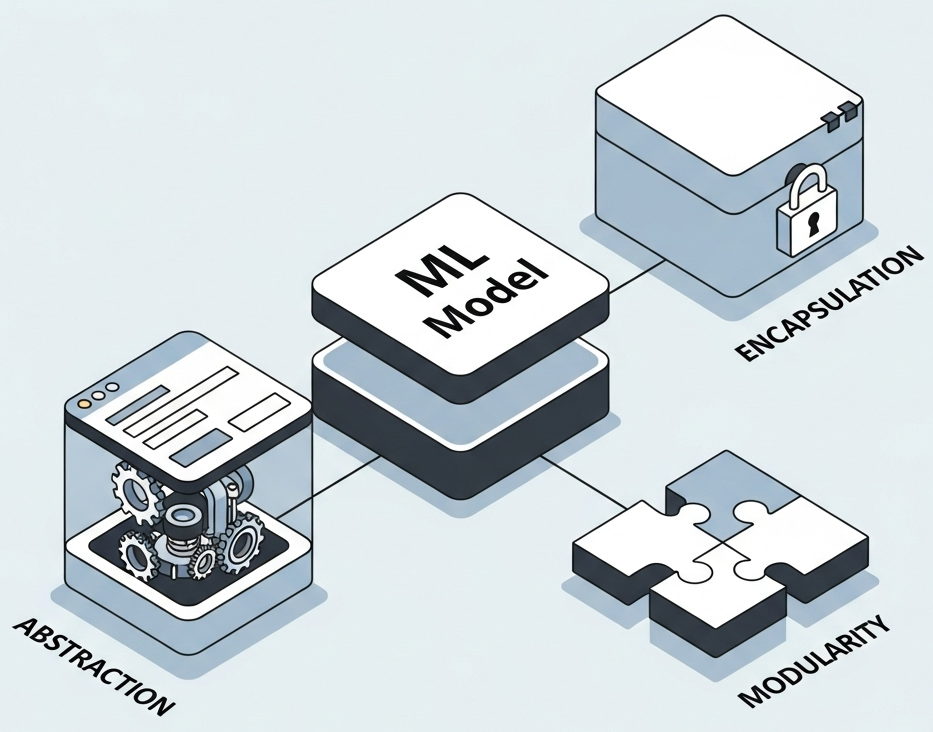
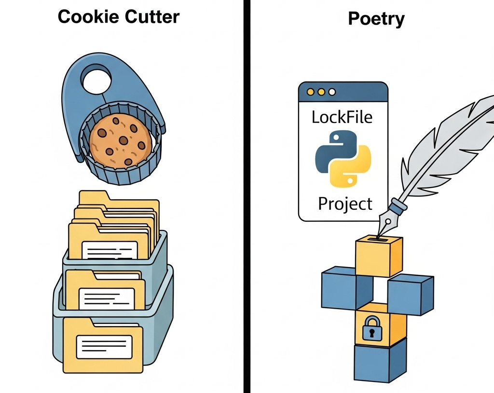
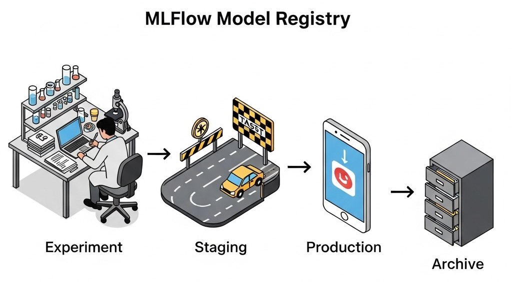
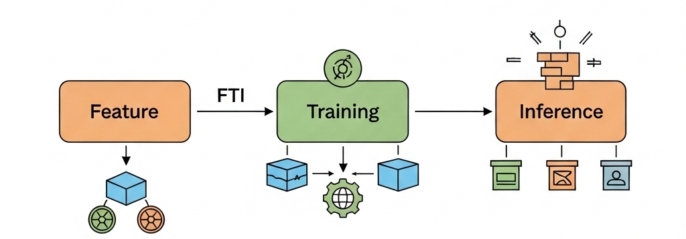
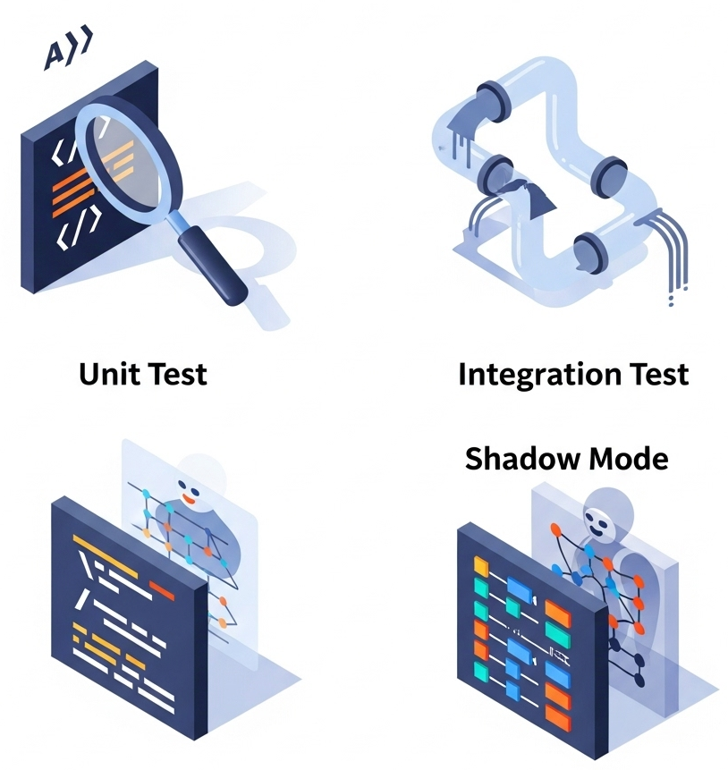
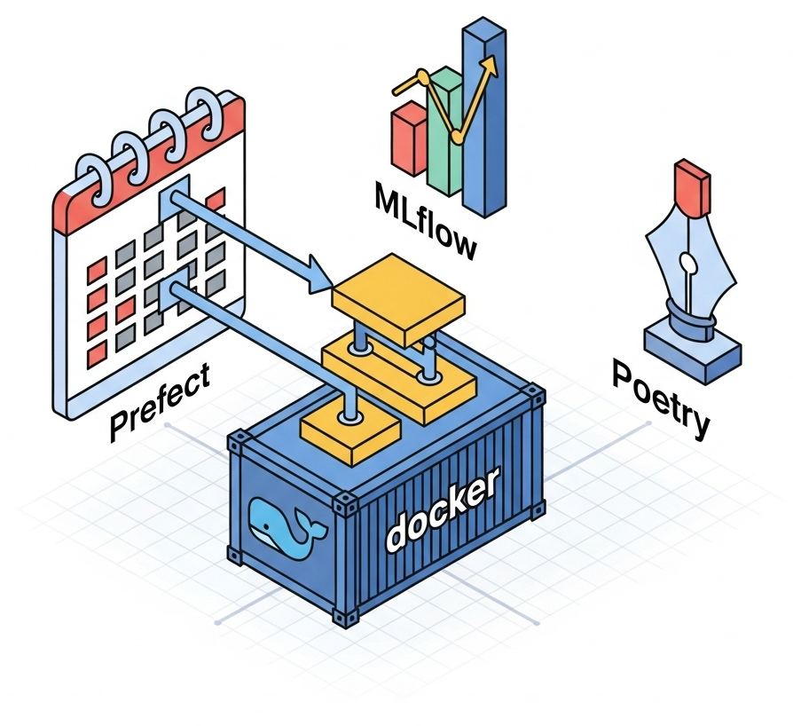
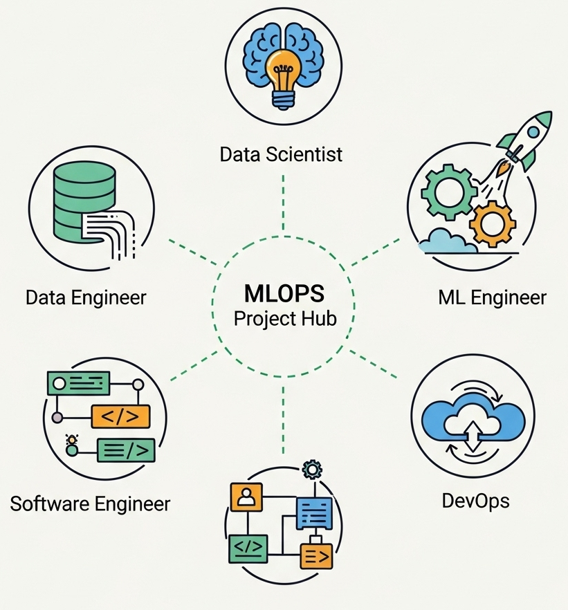

Código Bien Organizado

Abstracción
- Esconde lo complicado
- Muestra lo necesario
- Fácil de entender
Encapsulación
- Protege datos
- Evita errores
- No valores fijos (hardcodeados X_X)
Modularidad
- Piezas separadas
- Fácil extender
- Reutilizable
Del Notebook a Producción
Evita: Código repetido, copiar-pegar, valores fijos
Objetivo: Código limpio, probado y listo para producción
Estructura del Proyecto

Cookie Cutter
- data/ Datos originales
- models/ Modelos guardados
- mlops/ Código pipeline
- tests/ Pruebas automáticas
Estructura consistente
Poetry
- Versiones de librerías
- Archivo lockfile
- Mismo ambiente siempre
- Instalaciones repetibles
Reproduce resultados
Seguimiento con MLflow

Organización de Experimentos
1. Experimento
Objetivo (ejemplo. "Clasificar entradas y salidas")
2. Corrida (Run)
Intento con hyper parámetros específicos
3. Versión
Modelo guardado con metadatos
MLflow Tracking
- Guarda parámetros
- Registra métricas
- Almacena modelos
- Compara resultados
Control de Datos
- DVC para datasets
- Saber qué datos usaste
- Repetir experimentos
Ciclo de Vida
Development: Pruebas | Staging: Validación | Production: En vivo | Archive: Guardado
Reproducibilidad

Pipeline FTI
Feature Pipeline
Datos crudos → Características
Training Pipeline
Características → Modelo
Inference Pipeline
Nuevos datos → Predicciones
Mismo proceso siempre
Problemas
Código diferente entre entrenamiento y producción
Versiones de librerías cambian
Soluciones
Scikit-learn Pipelines
Docker congela ambiente
Seeds fijas en división
Pruebas (Testing)

Pruebas Unitarias
Cada parte separada: datos, características, configuración
Pruebas de Integración
Todo el flujo junto: datos hasta modelo
Pruebas Diferenciales
¿Nuevo modelo mejor que el anterior?
Shadow Mode
Prueba en producción sin afectar usuarios
Herramientas Clave

Prefect
- Coordina tareas
- Sabe qué falló
- Reintenta automático
- Escala fácil
Docker
- Empaqueta ambiente
- Mismo en todas máquinas
- Adiós al "funciona en mi máquina"
- Fácil desplegar
El Equipo MLOps

Científico de Datos (DS)
Experimenta con modelos. Crea prototipos. Empieza simple.
Ingeniero de Software (SE)
Código profesional. Limpio, probado y organizado.
Ingeniero de Datos (DE)
Maneja datos. Limpios y a tiempo.
Ingeniero ML (MLE)
Modelos en pruebas y producción. MLflow.
Ingeniero DevOps
Infraestructura y monitoreo. Servidores, logs, alertas. Docker, CI/CD
Referencias
- Ahmed, S. (s.f.). Managing Machine Learning Workflows with Scikit-learn Pipelines Part 1: A Gentle Introduction. KDnuggets.
- Amos, D. (2024, 15 de diciembre). Object-Oriented Programming (OOP) in Python. Real Python.
- Anthropic. (2025). Claude 4.5 Sonnet. https://www.anthropic.com/claude/sonnet
- Cookiecutter. (2023). Save time and stay consistent. Cookiecutter.
- Galli, S. (2020, 27 de enero). How To Build And Deploy A Reproducible Machine Learning Pipeline. Medium.
- Google DeepMind. (2025). Imagen 4 Ultra. https://deepmind.google/models/imagen/
- MLflow. (s.f.). MLflow Tracking. MLflow Docs.
- MLflow. (s.f.). Model Registry Quickstart. MLflow Docs.
- MLflow. (s.f.). Your First MLflow Model: Complete Tutorial. MLflow Docs.
- Onose, E. (2025, 15 de mayo). How to Solve Reproducibility in ML. Neptune Blog.
- Poetry. (s.f.). Introduction | Documentation | Poetry - Python dependency management and packaging made easy. Poetry Documentation.
- Prefect. (s.f.). Introduction. Prefect Documentation.
- scikit-learn. (s.f.). 7.1. Pipelines and composite estimators (Versión 1.7.2). scikit-learn documentation.
- Senthil E. (2023, 10 de marzo). MLOps-Refactoring Python Code. Introduction. Analytics Vidhya. Medium.